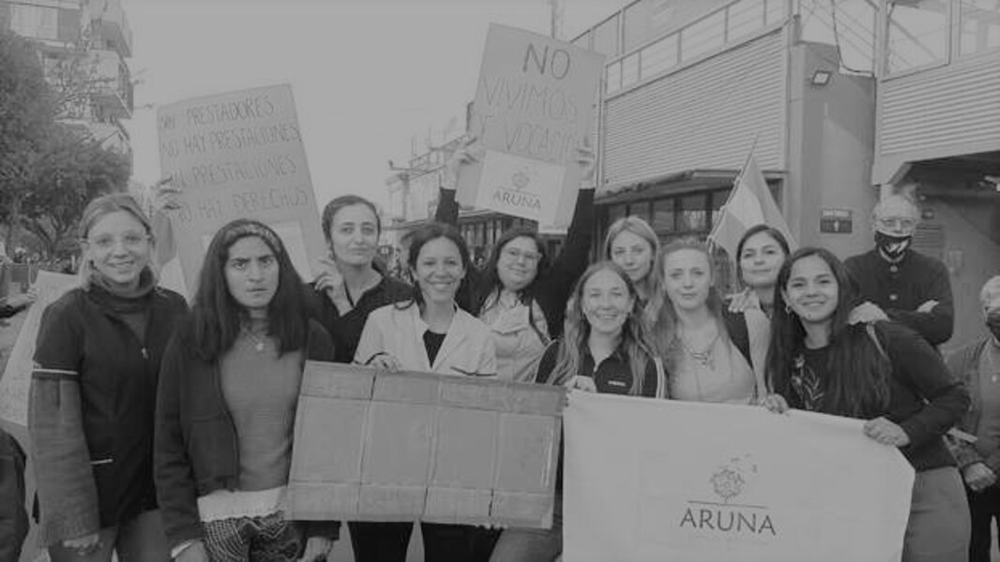

- 
El modelo social de la discapacidad se presenta como nuevo paradigma del tratamiento actual de la discapacidad, con un desarrollo teórico y normativo; considera que las causas que originan la discapacidad no son religiosas, ni científicas, sino que son, en gran medida, sociales. Desde esta nueva perspectiva, se pone énfasis en que las personas con discapacidad pueden contribuir a la sociedad en iguales circunstancias que las demás, pero siempre desde la valoración a la inclusión y el respeto a lo diverso. Este modelo se relaciona con los valores esenciales que fundamentan los derechos humanos, como la dignidad humana, la libertad personal y la igualdad, que propician la disminución de barreras y dan lugar a la inclusión social, que pone en la base principios como autonomía personal, no discriminación, accesibilidad universal, normalización del entorno, diálogo civil, entro otros. La premisa es que la discapacidad es una construcción social, no una deficiencia que crea la misma sociedad que limita e impide que las personas con discapacidad se incluyan, decidan o diseñen con autonomía su propio plan de vida en igualdad de oportunidades
Este marco social trasciende la atención centrada exclusivamente en el sujeto, considerado “deficiente” o “patológico”, e incide en la población en general, en la comunidad con el propósito de producir cambios positivos en las instituciones, como son los centros educativos, de atención a la salud, laborales y de legislación, entre otras, con el fin de modificar los factores que predisponen la discapacidad y para posibilitar mayor bienestar en esta población. Esta orientación representa algo más que un cambio de técnicas: implica nuevas actitudes en el quehacer cotidiano de los y las profesionales del área social y, por supuesto, una nueva planificación y orientación de los sistemas de atención.